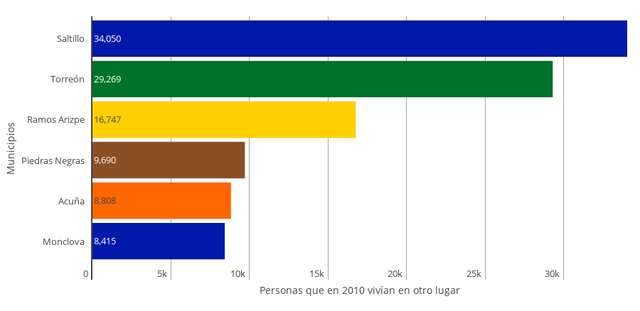
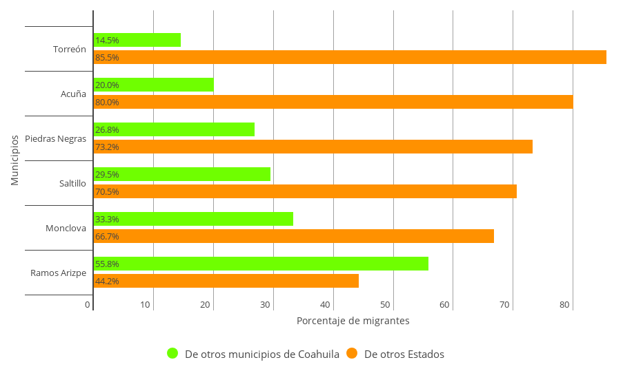
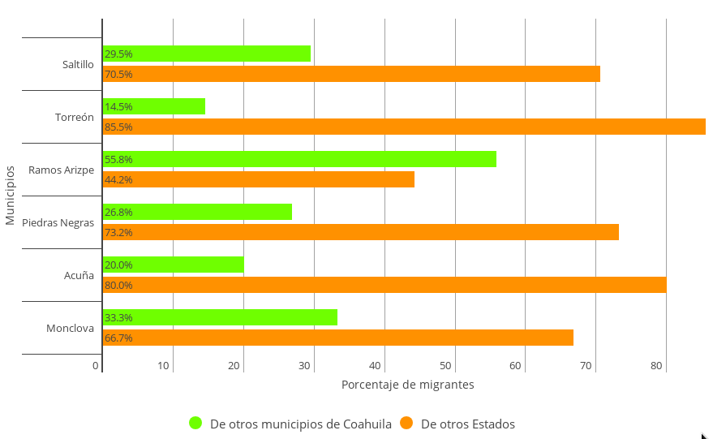
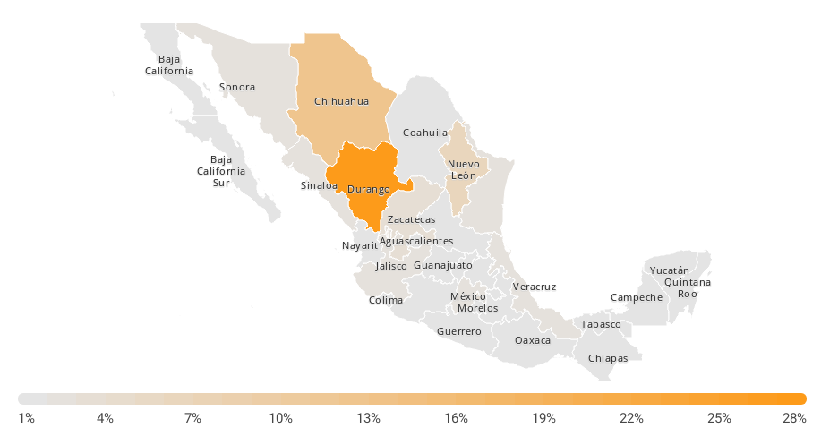
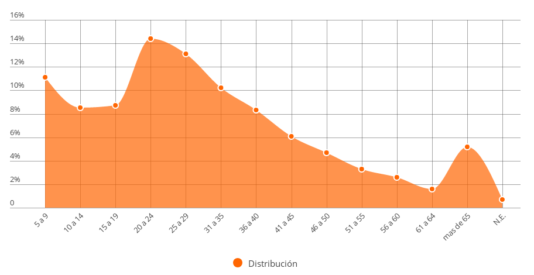
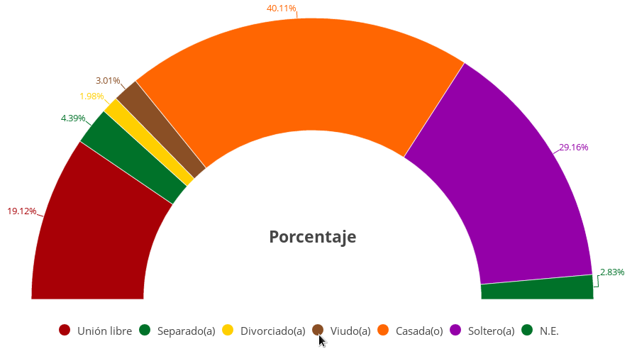
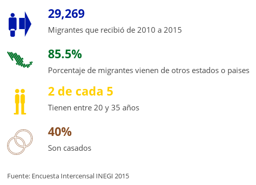

El fenómeno de la migración ha acompañado al hombre desde que se tiene registro y ha sido fundamental para la propagación y desarrollo de nuestra especie. Al hablar de migración hacemos referencia al movimiento de personas de una región geográfica a otra, motivado por factores internos como lo son las decisiones personales, o exteriores situación que se presenta por cuestiones de precariedad, guerra, política, entre otros.
El ritmo con el que se desarrollaron las ciudades durante el siglo XX está estrechamente relacionado con el fenómeno de la migración, no solamente la de campo-ciudad, sino también entre países y ciudades. Esto permite un intercambio cultural entre poblaciones con características diferentes que terminan por dotar de identidad a una región, zona o ciudad. Países como los Estados Unidos y Australia se desarrollaron por este fenómeno, tal como nuestra ciudad en los albores del siglo pasado que junto con las oportunidades creadas por la llegada del ferrocarril permitió un acelerado desarrollo impulsado por comunidades avecindadas provenientes de diferentes partes del país así como del extranjero.
De acuerdo con datos de INEGI en 2015 Torreón cuenta con 679,288 habitantes siendo la segunda ciudad más poblada solamente detrás de la capital del Estado, Saltillo. De estos habitantes 29,269 son inmigrantes, es decir, en 2010 vivían en otro lado.
Gráfica 1: Inmigrantes por municipio

Esta población representa al 4.72% del total, un porcentaje ligeramente superior a Saltillo. Un caso excepcional es la ciudad de Ramos Arizpe, sede de una dinámica zona industrial y atractor de inversiones nacionales y extranjeras, su población está conformada por 20.1% de inmigrantes, principalmente por su oferta laboral.
Gráfica 2: Población total y proporción de inmigrantes

El 85.5% de la población inmigrante radicada en Torreón proviene de otros estados del país y el 14.5% de otros municipios de Coahuila, lo que nos indica que nuestra ciudad es una opción para los emigrantes de los estados vecinos. Torreón cuenta con la mayor proporción de inmigrantes de otros estados y la menor de coahuilenses. Caso contrario a ciudades como Saltillo, Ramos Arizpe, Piedras Negras, Acuña y Monclova. De nuevo observamos la centralización de la migración de los municipios del estado hacia el polo de desarrollo de la Zona Metropolitana de Saltillo. Más de la mitad de los inmigrantes de Ramos Arizpe provienen de otros municipios del Estado.
Gráfica 3: Origen de los inmigrantes

Enfocándonos en Torreón, ¿de cuales estados son originarios los inmigrantes? Es interesante la relación con los municipios que forman parte de la Comarca Lagunera del lado duranguense, pero también con Chihuahua, Nuevo León y Zacatecas.
Gráfica 4: Origen de la población inmigrantes de Torreón

La edad de los inmigrantes y su estado civil nos muestra algunas características que hacen competitiva a nuestra ciudad ya que el 14.4% tienen entre 20 y 24 años de edad, la mayor proporción etaria, seguido por el grupo de 25 a 29, y el 29.2% de estos son solteros.
Gráfica 5: Edad de los inmigrantes en Torreón

Gráfica 6: Estado civil de los inmigrantes en Torreón

Esto que nos lleva a pensar en la oferta académica de nivel profesional con la que se cuenta con más de 30 universidades en la región y 18 localizadas en nuestro municipio, entre ellas la Universidad Autónoma Agraria Antonio Narro la cual se distingue por ser una opción para los jóvenes de la región centro y sur del país para la profesionalización en temas agropecuarios, aunado a la atracción de los jóvenes de los municipios de Durango que optan por elegir nuestra ciudad para realizar sus estudios profesionales en diversos campos.
Infografía
